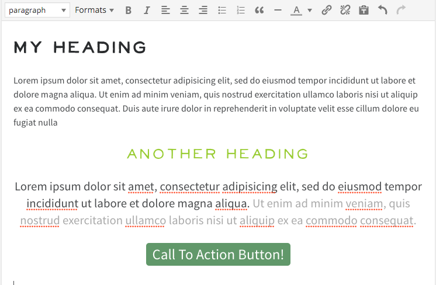

Overview
WordPress is awesome, but some of the TinyMCE rich text editing options that come out of the box are not ideal for less web-savvy editors and clients. This plugin provides some modifications to the standard editor buttons and features that will make it easier for clients to have as all the formatting options that are good for them and remove options that can break a custom site design.

Features
- Removes the toggle advanced button. This is confusing to many users who can't find the features they are looking for. Just provides 1 row of editor buttons.
- Removes features such as strike through, underline (should be reserved for links online, not emphasis), full justification (looks bad online, but clients like to use it), and several other less used and confusing features.
- Simplifies the dropdown list of heading types available.
- Adds several formats that can be added to a paragraph
- Button - add this format to a paragraph to make the links into "call to action" buttons
- Small - a format for create a paragraph of smaller text, such as a "terms & conditions" section.
- Big - enlarge the text of a certain paragraph. This helps client not mis-use heading elements for entire paragraphs when they want slightly larger text for emphasis.
- Limits color palette in the text colorpicker to grayscale only by default.
- Allows for adding up to 4 custom colors that compliment the site's design and branding that the user may use. (Under Settings > Writing)
- Adds the current theme's style.css to the editor to make what you see in TinyMCE match the live site better
- Allows for adding additional css files to the editor styles. These could be external resources such as google font stylesheets, additional theme css you want to load in the editor, or a custom stylesheet. Just add the URL you want to add in the Additional CSS field under Settings > Writing. For multiple files separate the files by comma with no spaces.
Scope
As the description states, this plugin makes opinionated changes to the default setup. I don't plan to grow this into a bulkier plugin that allows you to modify and customize all aspects of TinyMCE. Try TinyMCE Advanced or other existing plugins for that.
Donate
If this plugin has been useful to you and you want to see further development consider making a donation: